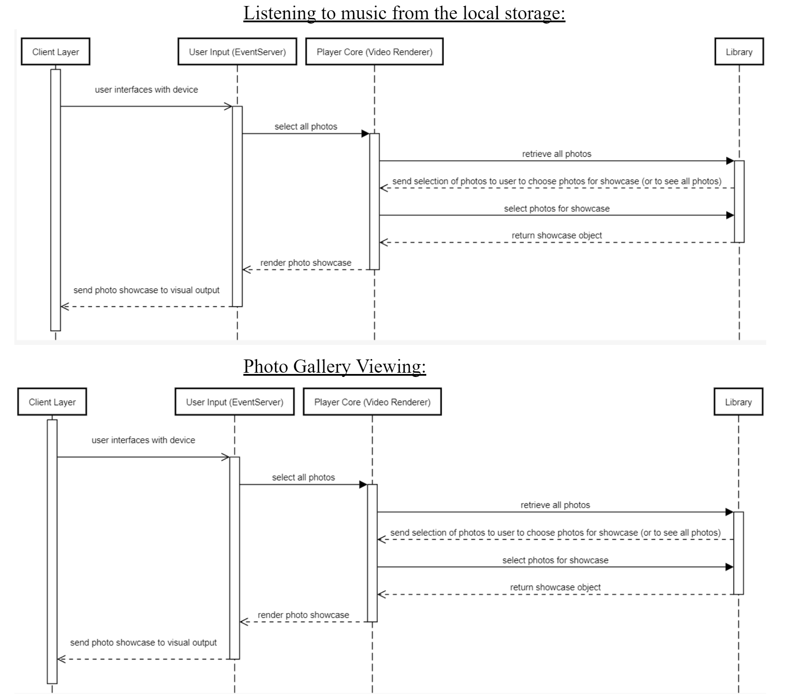

"Stratified Solutions for Seamless Streaming: Team Kodi's Layered Network Odyssey"
Trevor Withers
Erin Atacan
Eli James
Joanna Bian
Zhihao (Dallas) Nie
Chengqi Li
Download the presentation here
The Kodi Entertainment Hub, a product of the XBMC Consortium(Kodi Wiki), is a collection of innovative software design made by a global effort. Central to this report is an exploration of its layered style of architecture, a model, ease of updates, and efficient interactions with external environments. Key stakeholders and their roles within the developmental framework are outlined, offering a roadmap of the software's evolution. Emphasizing its adaptability, the report sheds light on Kodi's expansive features and their seamless functionality across many platforms. Targeted at both managers and developers, the concluding insights highlight the software's evolutionary trajectory, ensuring it remains at the forefront of architectural and functional innovation.
In the ever-evolving industry of digital entertainment, the Kodi Media Player, formerly known as the XBMC Player, emerges as a globally crafted multi-platform entertainment center. Developed under the umbrella of the XBMC Foundation, this open-source marvel is the result of countless hours of collaboration by a diverse community of contributors. In this report, we go through the intricate layers and perspectives that constitute the Kodi Media Player's architectural style.
Our voyage began with the simple act of downloading this media player and experiencing its capabilities firsthand. Over the course of several weeks, Team Cache Me Some Waves, representing the dynamic student body at Queen's University, delved headfirst into Kodi architecture. Armed with newfound knowledge and tools gleaned from our Software Architecture course (CISC 322), we explored this software from various angles and discussed its architecture.
This webpage serves as our journal, capturing our observations and discoveries as we investigate Kodi's layers and viewpoints. We present our findings and insights, all guided by the central question of whether Kodi possesses a robust architecture that allows for future software evolution.
Kodi presents a captivating exterior to users, offering an all-encompassing media center experience. Its intuitive design provides users with a seamless interface for accessing movies, music, and images. With its user-friendly features, Kodi effortlessly integrates into living room environments when connected to a TV, allowing users to control their multimedia experience from the comfort of their couches with remote keyboards and mice.
One of Kodi's standout features is its support for a wide range of add-ons, which enable users to stream or download multimedia from external sources, such as Spotify, Grooveshark, series, news channels, and missed broadcasts. With add-ons, users can effortlessly access and enjoy the latest multimedia content, whether online or offline.
Originally developed for the XBOX game console as the "XBOX Media Center (XBMC)," Kodi has expanded its horizons to include various platforms, including Windows, OSX, iOS, Android, and Linux. In 2014, it underwent a name change, becoming the "Kodi" Entertainment Center, while retaining its commitment to open-source principles and free access.
Behind the scenes, developers collaborated to enhance the Kodi Media Player. Our journey takes us into the depths of Kodi's repository on Github, where we unveil the influential stakeholders, including board members, experienced developers, and maintainers who steer the course of this software.
We'll traverse the intricate web of dependencies and interactions through the context view, shedding light on how Kodi interfaces with its environment. The development view reveals Kodi's modular architecture, akin to well-ordered building blocks, supporting its development and maintenance.
Our journey continues with the functional view, providing a deeper understanding of how these building blocks operate and interact. While Kodi may appear consistent across various operating systems from the outside, the variability view exposes the nuanced differences in features.
Lastly, we gaze into the future through the evolution perspective, where we discuss and evaluate the roadmap to the next version, codenamed 'Isenguard.' This perspective underscores Kodi's commitment to continuous enhancement.
As we navigate through Kodi's multifaceted architecture, this report aims to provide a comprehensive understanding of the Kodi Media Player, both from the user's perspective and the developer's realm, unveiling its architectural prowess and potential for evolution.
Kodi’s architecture is separated into 4 distinct layers. The Client Layer is the system used by the client to access the application. The Presentation layer handles user input and the tools used to manipulate audio and visual elements of the application. The Business layer handles the logic behind how clients interact with the content ( display, network access, playback, etc). Finally the Data layer consists of a database of the media, its metadata and the views available to access it.
The Client Layer captures the external device the user is accessing Kodi on.
The Presentation Layer consists of subsystems that handle all aspects of the user’s interaction with Kodi’s interface. First, EventServer API is used to capture user input from external devices. Then the Windows Manager Module uses libraries provided by the external devices to provide visual display appropriate to the device. GUI Elements is a subsystem that handles all design elements of the Kodi interface. These elements determine how the user navigates the website. The translation module uses WebLate, a web-based continuous translation tool. The Audio Manager module uses Windows Audio Session API to manage output specifics such as the device, mode, volume and delay.
Within the Business Layer, the Python Module handles user or third party add-ons. These are extensions that can be run within Kodi. A Web Server module allows for several users to access the same content from the same network. A Player core module handles interaction between the media files (from the Data layer) and the system that handles its playback.
The Data Layer has a Sources Elements database that holds all media sources within Kodi. Users are allowed to add or access different content. The Views Elements database offers different organizational structures for the media to be viewed as (by genre, title, etc). The Metadata Elements consists of data related to the content such as title, genre, language etc.
The performance critical parts of the system are CPU performance, graphics processing ability, I/O and memory management. Sufficient CPU performance with memory management is required by codec, audio renderer and audio player, so that the system can load, process and play the data stream in real time. Graphics processing unit is necessary for the video renderer to work.
Kodi allows for changes in its system by its own developers, third-party developer and users themselves. Firstly, as a guideline, Kodi is built with low-coupling between the system and other operating systems or third party libraries. This prevents any damage to Kodi’s system as a result of bugs in external systems. Also, Kodi has a modular design where subsystems are localized, isolated pieces of code. This means that by disabling a non-essential module or library, Kodi should still compile and run. This allows future changes to be made without risk of damaging existing features of the system. Another aspect of Kodi that allows for changes in its system is its AddOns. These are extensions run within Kodi written by third-party developers or users themselves. These are either private repository add ons for the users only, or official repository add ons where Kodi reviews and then publishes addons it deems fit within the guidelines of its system. Finally there are System add ons that can only be installed by Kodi. These are typically written in Python so Kodi provides a built-in python interpreter for users to use. This provides a clean interface with the Kodi dashboard. Finally, Kodi’s development process allows only stable versions of the system to be released. Development builds are unstable, new versions made by developers to test new features. Users are able to request new features through forums and submit bug reports as well. Kodi is a system well prepared for changes made by users, other applications and the developers themselves.
The user interacts with the Kodi through its user interface. The Kodi will start to play the media file once selected from its database or supplied by the user, at the same time, the player core retrieves data from the database and decodes synchronously as the decoded data is rendered and played, this allows the user to play the music/video immediately, even if the further data is not processed yet. While the media is being played, users can interact with the playback through the GUI of Kodi, which includes actions like volume control, pause, resume, and go back etc.. These controls will be passed to the player core which handles the playback and players.
Kodi exhibits a layered architecture style whereby distinct, modular layers interact with at most 1 layer above or below them. This poses a few benefits. Firstly, as the community develops new plugins, we can test components independently of one another to assess how it interacts with the system. Furthermore, we can support modularity as a design philosophy with a layered system because we can create changes to a layer while affecting at most the layer that acts as a client to it and the layer that it is a client of. We can group associated processes in layers which then interact with each other hierarchically, which can encourage thoughtful design of streamlined processes by easing abstraction.
Elements that are critical to success of architecture:
Diagram
External Interfaces
Use Cases:
| Attribute Name | Format | Store | examples |
| Windows manager Module | Libraries from OS | Presentation layer | Handle window management |
| GUI Elements | GUI setting files | Presentation layer | Button size |
| Translation Module | Language packs | Presentation layer | English |
| Audio manager Module | Audio setting files | Presentation layer | Audio output selection |
| Fonts module | Font files | Presentation layer | Titles, menus |
| Python module | Python libraries | Business Layer | Manage custom adds-on |
| Web server module | Built in web server | Business Layer | Remote control through web browser |
| Player Core Module | Player files | Business Layer | Control and play multimedia content |
| Source elements | HDD, CD,DVDNetwork protocols,Streaming Device | Data Layer | Manage media sources, add or access different content sources |
| View elements | Viewer files | Data Layer | File List or more organized option |
| Metadata elements | Tag readers, Web scrapers | Data Layer | Obtain additional information about multimedia content |
Lessons Learned:
The Kodi media player exhibits an innovative software design and architecture which offers an all-encompassing media center experience. Kodi integrates into a wide variety of environments and supports a range of add-ons built by the community. Kodi stands as an exemplar as an open-source and free access piece of software built for and by its community. Its modular, layered architecture ensures a scalable, and robust system which can be built upon thanks to its plug-ins which are programmed by the open-source community. The wide selection of plug-ins, along with the streamlined manner in which they can be built and integrated into the codebase allow the broadening of the app’s use cases to encompass all audio, video and emulation needs. Built with low-coupling to external systems, Kodi is able to add, upgrade, enable and disable modules without breaking the app, ensuring seamless expansion of the app its community grows. With modularity in mind, Kodi’s developers and contributors have ensured its continual expansion and reliability as time goes on, making it forefront exhibit of community driven open-source development.
Architecture. Architecture - Official Kodi Wiki. (2023, July 10). https://kodi.wiki/view/Architecture [1]
Dreef, K., van der Reek, M., Schaper, K., & Steinfort, M. (2015, April 23). Architecting software to keep the lazy ones on the couch. Kodi. https://delftswa.github.io/chapters/kodi/ [2]
Kodi (software). Wikipedia. https://en.wikipedia.org/wiki/Kodi_(software)#Architecture [3]